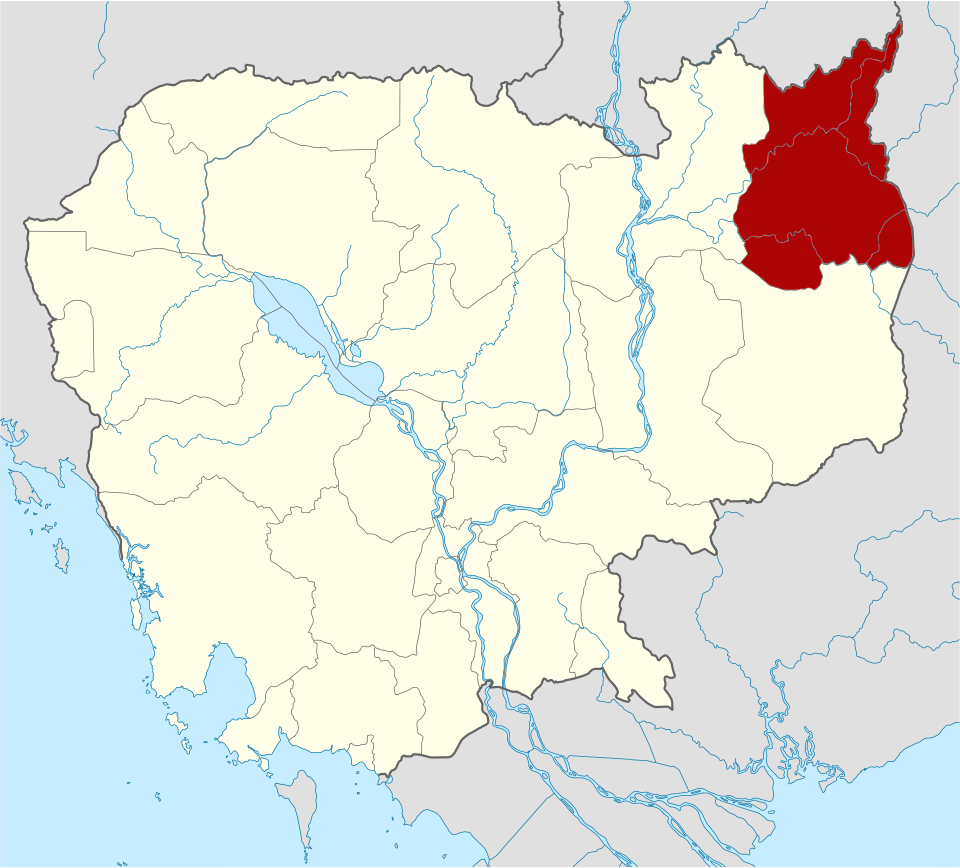
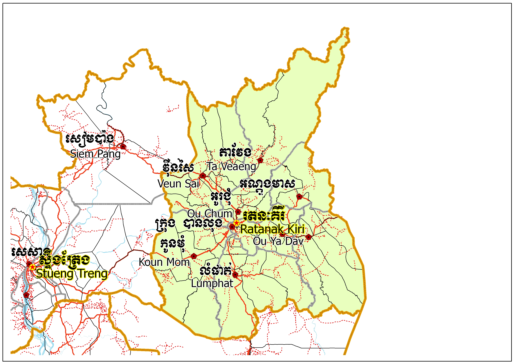
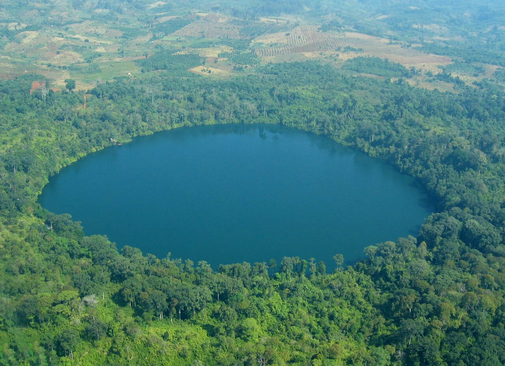
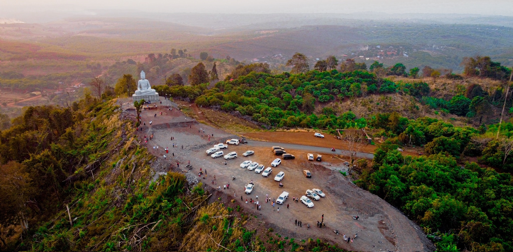

ខេត្តរតនគិរី
ខេត្តរតនគិរី គឺជាខេត្តមួយស្ថិតនៅភូមិភាគឦសាននៃប្រទេសកម្ពុជា។ ខេត្តរតនគិរីមានព្រំប្រទល់ខាងខាងកើតជាប់នឹងខេត្តកន្ទូម និងខេត្តយ៉ាឡាយ នៃសាធារណរដ្ឋសង្គមនិយមវៀតណាម ខាងលិចជាប់នឹងខេត្តស្ទឹងត្រែង ខាងជើងជាប់នឹងខេត្តអាត្តពឺ នៃសាធារណរដ្ឋប្រជាធិបតេយ្យប្រជាមានិតឡាវ និងខាងត្បូងជាប់នឹងខេត្តមណ្ឌលគិរី ហើយមានចម្ងាយ ៥៨៨គីឡូម៉ែត្រ ពីរាជធានីភ្នំពេញ ។ ខេត្តរតនគិរីជាខេត្តមួយដែលមានលក្ខណៈពិសេសជាងគេក្នុងចំណោមខេត្តដែលនៅភូមិភាគឦសានប្រទេសកម្ពុជា ដោយខេត្តមានតំបន់ទេសចរណ៍ធម្មជាតិជាច្រើនអនេក និងទេសចរណ៍វប្បធម៌ជនជាតិភាគតិចផងដែរ។

លក្ខណៈភូមិសាស្ត្រ
ខេត្តរតនគិរី ជាខេត្តនៅភាគឦសាននៃប្រទេសកម្ពុជា ។ ទីរួមខេត្តបានលុងស្ថិតនៅកណ្តាលខ្ពង់រាបនៃខេត្ត ចម្ងាយ ៥៨៦ គ.ម ពីទីក្រុងភ្នំពេញ ។ ខេត្តរតនគិរីមានព្រំប្រទល់ខាងជាប់ប្រទេសឡាវ ខាងកើតជាប់ប្រទេសវៀតណាម ខាងជើងជាប់ខេត្តមណ្ឌលគិរី និងខាងលិចជាប់ខេត្តស្ទឹងត្រែង។ ខេត្តមានទីតាំងស្ថិតនៅលើខ្ពង់រាបនៃភូមិភាគឦសានប្រទេសកម្ពុជា។ ខ្ពងរាបនេះជាគែមខាងលិចនៃប្រជុំភ្នំកន្តំនៃប្រទេសវៀតណាម។ លំផាត់ដែលជាទីប្រជុំជននៅភាគខាងត្បូងខេត្ត ជាទីរួមខេត្តកាលពីមុន ។ ខេត្តរតនគិរីជាគោលដៅទេសចរណ៍ដ៏មានប្រជាប្រិយ ទាក់ទាញភ្ញៀវទេសចរណ៍រាប់ពាន់នាក់ជារៀងរាល់ឆ្នាំ ។ភាគច្រើននៃប្រជាជនរតនៈគិរីជាជនជាតិភាគតិច ចំនែកជនជាតិខ្មែរមានប្រមាណតែ ១០ ទៅ ២០ % ប៉ុណ្ណោះ ។
.jpg)

រដ្ឋបាល
ខេត្តរតនគិរីរួមមាន៩ស្រុក (ក្នុងនោះមាន៤៩ឃុំ)៖
- ស្រុកអណ្តូងមាស
- ក្រុងបានលុង
- ស្រុកបរកែវ
- ស្រុកកូនមុំ
- ស្រុកលំផាត់
- ស្រុកអូរជុំ
- ស្រុកអូរយ៉ាដាវ
- ស្រុកតាវែង
- ស្រុកវើនសៃ
តំបន់ទេសចរណ៍
បឹងយក្សឡោមបឹងយក្សឡោមជារមណីយដ្ឋានដ៏មានប្រជាប្រិយភាពនៅក្នុងខេត្តរតនៈគីរី។ បឹងដែលជាស្លាកស្នាមនៃមាត់ភ្នំភ្លើងប្រមាណ ៤០០០ ឆ្នាំមុន ស្ថិតនៅប៉ែកខាងត្បូងឆៀងខាងកើតពីរួមខេត្តប្រហែល ៤,៨ គ.ម ។ ដោយបឹងនេះមានជំរៅជ្រៅរហូតដល់ ៤៨ម៉ែត្រ ទឹកបឹងមានសភាពថ្លាឆ្វង់ហើយស្អាត។ មាត់បឹងមានរាងស្ទើរជារង្វង់ដែលមានអង្កត់ផ្ចិតប្រមាណ ៧៥០ម។ នៅជុំវិញបឹង សំបូរដោយដើមឈើធំៗ ដែលជាជំរកនៃសត្វសេក និងសត្វកំរៗនានាជាច្រើន។


- ទឹកធ្លាក់កាចាង ៖ទឹកធ្លាក់កាចាងស្ថិតនៅ ៦ គីឡូម៉ែត្រខាងជើងឈៀងខាងលិចបានលុង ។ ទឹកធ្លាក់នេះហូរចុះទៅទន្លេស្រែពក ។ ទឹកធ្លាក់កម្ពស់ ១២ ម៉ែត្រនេះមានគ្រប់រដូវកាលពេញមួយឆ្នាំៗ ។ ទឹកធ្លាក់កាចាង ៖ទឹកធ្លាក់កាចាងស្ថិតនៅ ៦ គីឡូម៉ែត្រខាងជើងឈៀងខាងលិចបានលុង ។ ទឹកធ្លាក់នេះហូរចុះទៅទន្លេស្រែពក ។ ទឹកធ្លាក់កម្ពស់ ១២ ម៉ែត្រនេះមានគ្រប់រដូវកាលពេញមួយឆ្នាំៗ ។
- ទឹកធ្លាក់កាទៀង៖ ទឹកធ្លាក់កាទៀងទឹកធ្លាក់កាទៀងស្ថិតនៅខាងជើងឆៀងខាងលិចបានលុងចម្ងាយ ៧ គីឡូម៉ែត្រ ទឹកធ្លាក់នេះកម្ពស់ ១០ ម៉ែត្រ ហើយមានជាប់រហូតគ្រប់រដូវកាល ។
- ទឹកធ្លាក់អូរស៊ីនឡែ : ស្ថិតនៅ ២៦ គីឡូម៉ែត្រខាងត្បូងបានលុង ។ ទឹកធ្លាក់នេះមាន ៤ ជាន់ ហើយមួយជាន់ៗ មានកម្ពស់៤ម៉ែត្រ ។ ទឹកធ្លាក់នេះមានគ្រប់រដូវ ទិដ្ឋភាពនៅជុំវិញទឹកធ្លាក់មានទិដ្ឋភាពស្រស់ស្អាតយ៉ាងខ្លាំង ។
- ទឹកធ្លាក់អូរសែនស្រណោះ : ស្ថិតនៅ ៩ គីឡូម៉ែត្រពីបានលុង ហើយមានកម្ពស់ ១៨ ម៉ែត្រ ដោយមានទឹកធ្លាក់ គ្រប់រដូវកាល។ភ្ញៀវទេសចរអាចសម្រាកលម្ហែកាយក្នុងធម្មជាតិដ៏ប្រណីត, ស្រូបយកខ្យល់អាកាសបរិសុទ្ធ និង ស្តាប់សូរទឹកធ្លាក់និងបក្សាបក្សីយំ ។
- ទឹកធ្លាក់ចាអ៊ុង : ស្ថិតនៅខាងលិចបានលុង ៨ គីឡូម៉ែត្រ ហើយធ្លាក់ជាប់ជាប្រចាំ ។ ប្រភពទឹកមានតំបន់ភ្នំស្វាយ ហើយនៅក្រោមទឹកធ្លាក់នេះគឺជារន្ធដ៏ធំមួយដែលអាចឱ្យភ្ញៀវទេសចរចូលទៅឈរ ឬ អង្គុយពីក្រោមទឹកធ្លាក់បាន ។
- ឧទ្យានជាតិវីរៈជ័យ៖ ឧទ្យានជាតិវីរជ័យស្ថិតនៅ ៤៥ គីឡូម៉ែត្រខាងជើងបានលុងដោយលាតសន្ធឹងលើផ្ទៃដី ៣៣២.៥០០ ហិកតា ។ ឧទ្យាននេះមានរុក្ខជាតិ និង ដើមឈើគ្រប់ប្រភេទ ព្រមទាំងសត្វព្រៃគ្រប់ប្រភេទទៀតផង ។
- ជម្រកសត្វព្រៃលំផាត់៖ជម្រកសត្វព្រៃលំផាត់ស្ថិតនៅ ៣៧ គីឡូម៉ែត្រខាងត្បូងបានលុងដោយស្ថិតនៅលើផ្ទៃដី ២៥០.០០០ ហិកតា ។ វាជាជម្រកសត្វព្រៃជាច្រើន ជាពិសេសខ្លា, ដំរី ជាដើម ។
- អូចាឡយ : ស្ថិតនៅនឹងទន្លេស្រែពក នៅប៉ែកខាងត្បូងឆៀងខាងលិចបានលុងចម្ងាយ ៣៤ គីឡូម៉ែត្រ ។ កន្លែង នេះអាចបង្កើតជាតំបន់ទេសចរណ៍តែនៅរដូវប្រាំងប៉ុណ្ណោះ ។
- ព្រៃនងកាបាត : ស្ថិតនៅ ២៥ គីឡូម៉ែត្រខាងជើងបានលុង ។ នៅទីនោះមានបឹងមួយដែលគេអាចឃើញសត្វព្រៃ និងបក្សីជាច្រើនប្រភេទមករកបឹងនេះ ។ ក្រៅពីនេះ ភ្ញៀវទេសចរអាចទស្សនាភូមិជនជាតិ, វប្បធម៌របស់ជនជាតិដូចជា ជំនឿ, ពិធីបុណ្យ, ការរាំ និង ការប្រគំភ្លេង ជាដើម។